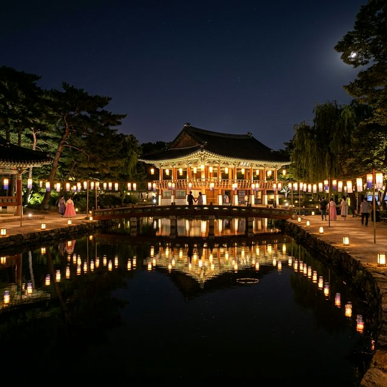
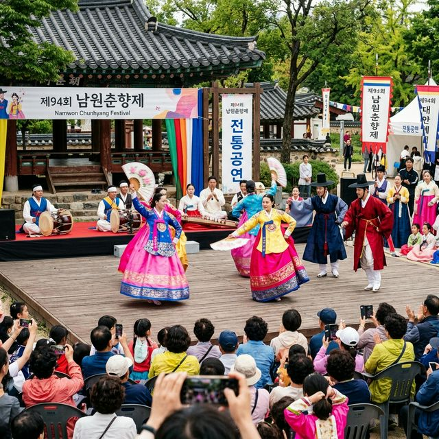
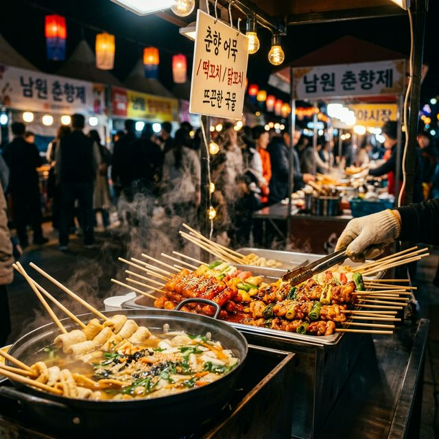

남원 춘향제 2026 일정 및 광한루원 야간 관람 — 5월의 낭만이 가득한 전통 축제의 모든 것
"사랑의 도시 남원에서 피어나는 한국의 정취, 100년을 향해 가는 춘향제에 당신을 초대합니다!"
싱그러운 초록이 짙어지는 5월, 판소리의 고장이자 사랑의 서사시가 흐르는 전북 남원이 오색 연등과 전통의 가락으로 물듭니다. 올해로 96회째를 맞이하며 한국에서 가장 오랜 역사를 자랑하는 축제 중
하나인 '2026 남원 춘향제'가 그 화려한 막을 올립니다. 단순히 민족의 고전인 '춘향전'을 기리는 행사를 넘어, 남원이라는 도시가 가진 깊은 역사적 결과 현대적인 축제 트렌드가 만난 이번 행사는
연인들에게는 낭만을, 가족들에게는 우리 문화에 대한 자부심을 선사하는 특별한 시간이 될 것입니다.
광한루원의 고풍스러운 누각 아래 흐르는 요천의 물결 위로 오작교와 연등이 반영되는 순간, 여러분은 현실의 번잡함을 잊고 몽룡과 춘향이 사랑을 속삭이던 조선 시대의 한 장면 속으로 초대받게 됩니다. 이번
포스팅에서는 2026년 남원 춘향제를 200% 즐기기 위한 필수 일정 정보부터, 반드시 확인해야 할 야간 관람 명당과 먹거리 팁까지 상세히 정리해 드립니다. 5월의 따스한 밤공기와 함께 전통의 멋에
취해보시는 건 어떨까요?

[ 환상적인 야경을 자랑하는 밤의 광한루원과 완월정 / AI 제작
이미지 ]
1. 2026 남원 춘향제 축제 개요 및 일정
전국적인 인지도를 가진 남원 춘향제가 2026년에도 어김없이 5월의 황금연휴를 기점으로 개최됩니다. 올해 축제는 '춘향, 사랑의 씨앗을 틔우다'라는 주제 아래, 전통의 보존과
새로운 세대로의 전승이라는 두 가지 가치를 동시에 추구합니다. 축제의 주 무대는 남원의 상징인 광한루원과 그 앞을 흐르는 요천 일대이며, 남원 전역의 주요 관광 명소들이 축제의 하위 공연장으로 활용되어 도시
전체가 거대한 문화 공연장으로 변모하게 됩니다.
축제가 개최되는 5월 10일부터 14일까지의 5일간은 남원의 기후가 가장 온화하고 쾌적한 시기입니다. 이 기간 동안 방문객들은 낮에는 전통 한복 체험과 다양한 무대 공연을 즐기고, 밤에는 일 년 중 오직
이때만 볼 수 있는 대규모 야간 조명 설치물과 요천의 불빛 퍼레이드를 감상할 수 있습니다. 이미 대한민국 축제 콘텐츠 대상을 여러 차례 수상한 만큼, 프로그램의 구성력이 매우 치밀하여 남원 춘향제는 매년
100만 명 이상의 국내외 관광객이 찾는 글로벌 축제로 자리매김하고 있습니다.
특히 2026년에는 '디지털 춘향제'라는 별칭에 걸맞게 스마트폰 앱을 활용한 증강현실(AR) 스탬프 투어와 메타버스 체험존이 대폭 확대되었습니다. 이는 전통을 어렵게 느끼는 어린이와 청소년들에게도 춘향전의
서사를 재미있게 전달하려는 남원시의 노력이 엿보이는 대목입니다. 축제장을 방문하시기 전, 공식 앱을 미리 설치하시면 실시간 실황 중계와 주차장 혼잡도를 확인하실 수 있어 훨씬 쾌적한 여행이 가능합니다. 남원이
선사하는 사랑의 기운을 만끽할 준비가 되셨나요?
| 📅 축제
일정 |
2026년 5월 10일(일) ~ 5월 14일(목) |
| 📍 주요
장소 |
광한루원 및 요천 일원 |
| 🎭 핵심
프로그램 |
춘향제향, 전국춘향선발대회, 판소리 경연 등 |
2. 100년을 바라보는 춘향제의 역사와 정신
춘향제의 뿌리는 일제강점기였던 1931년으로 거슬러 올라갑니다. 당시 남원의 기생들과 주민들은 나라를 잃은 슬픔 속에서도 절개의 상징인 성춘향을 기리는 '춘향제향'을 지내기 시작했습니다. 이는 단순히 소설 속
주인공을 기념하는 것을 넘어, 외세의 압제에 굴하지 않는 우리 민족의 정신적 지조와 사랑에 대한 헌신을 투사한 일종의 민족 운동이었습니다. 90년이 넘는 세월 동안 단 한 차례도 쉬지 않고 이어져 온 이
축제의 밑바탕에는 남원 사람들의 뜨거운 자부심이 흐르고 있습니다.
전통적인 관점에서의 춘향제는 '절개와 정조'라는 보수적 가치를 중시했지만, 현대의 춘향제는 이를 '진실한 사랑과 신뢰'라는 보편적인 인류애로 확장하여 해석합니다. 춘향과 몽룡의 계급을 초월한 사랑은 오늘날의
다양한 사회적 장벽을 허무는 공감의 서사가 되었으며, 전국의 소녀들이 저마다의 미와 덕을 뽐내는 '전국춘향선발대회'는 이제 한국을 대표하는 전통 미인 대회로서 그 품격을 인정받고 있습니다. 단순히 예쁜 얼굴을
뽑는 것이 아니라, 춘향의 기품과 지성을 갖춘 재원들을 선발하여 우리 전통 문화의 홍보대사로 임명하는 과정은 춘향제만의 독특한 전통입니다.
축제의 서막을 여는 '춘향제향'은 여전히 축제의 가장 경건하고 중요한 행사로 여겨집니다. 광한루 내 춘향 사당에서 거행되는 이 제례는 여성들이 주관하는 한국의 몇 안 되는 독특한 전통 제례 양식을 고스란히
간직하고 있습니다. 엄숙한 분위기 속에서 제관들이 올리는 정성 어린 몸짓과 간절한 축문 낭독을 지켜보다 보면, 우리 문화가 가진 깊은 정서적 뿌리와 '사랑'이라는 단어가 가진 거대한 힘을 새삼 되새기게
됩니다. 역사의 흐름 속에서도 변치 않는 가치를 지키려는 남원 사람들의 고집이 2026년에도 이 축제를 명품으로 만드는 원동력입니다.
3. 광한루원: 별들이 내려앉은 조선 시대 정원의 미학
남원 춘향제의 심장이자 우리나라 4대 누각 중 하나로 꼽히는 광한루원은 그 자체로 하나의 거대한 예술 작품입니다. 세종 시대 황희 정승이 세운 광통루에서 시작해 성종 시대
광한루로 이름이 바뀐 이곳은, 지상에 구현된 천상의 정원인 '광한청허부'를 모티브로 조성되었습니다. 정원 내부를 흐르는 물길과 그것을 잇는 오작교, 그리고 연못 위에 떠 있는 세 개의 섬(삼신산)은 도교의
신선 사상을 건축적으로 승화시킨 결과물입니다. 춘향제 기간에는 이 정원 전체가 수천 개의 오색 연등과 은은한 야간 조명으로 치장되어 말로 표현하기 힘든 황홀경을 선사합니다.
특히 광한루를 정면으로 바라볼 수 있는 완월정 부근은 축제 기간 최고의 포토존으로 꼽힙니다. 연못에 비친 누각의 반영 사진을 찍기 위해 전국에서 출사객들이 모여들며, 한복을 곱게 차려입은 여행객들이 오작교를
건너는 모습은 그 자체로 한 폭의 동양화를 연상시킵니다. 정원 곳곳에는 수령이 수백 년 된 버드나무와 고목들이 줄지어 서 있어, 그 아래 벤치에 앉아 바람 소리를 듣는 것만으로도 내면의 평화를 얻기에
충분합니다. 춘향제 기간에는 이 고풍스러운 정원 곳곳에서 정기적인 마당극과 가야금 병창이 울려 퍼져 대기의 질감 자체가 전통의 기운으로 가득 찹니다.
광한루원 내부에는 춘향전에 등장하는 주요 장소들이 테마별로 잘 가꾸어져 있습니다. 춘향의 어머니인 월매의 집부터, 그들이 사랑을 맹세했던 방, 그리고 춘향이 옥살이를 하던 감옥 등을 재현한 공간들은 소설의
서사를 시각적으로 체험하게 합니다. 특히 최근 복원된 전통 정원 구역은 인조적인 요소들을 최대한 배제하고 물소리와 바람소리, 그리고 흙냄새를 살리는 공법으로 조성되어 도시민들에게 최고의 휴식처가 되고
있습니다. 춘향제 기간, 광한루원이 내뿜는 은은하고도 강렬한 고전의 아우라는 당신의 2026년 봄날을 영원히 기록될 추억의 장으로 만들어줄 것입니다.

[ 한국의 흥과 멋이 깃든 춘향제 전통 예술 공연 / AI 제작
이미지 ]
4. 야간 관람의 백미: '불기둥'과 요천 미디어아트
남원 춘향제가 최근 몇 년 사이 젊은 층 사이에서 폭발적인 인기를 끌게 된 배경에는 압도적인 야간 콘텐츠의 힘이 큽니다. 해가 저물면 광한루원과 그 앞을 흐르는 요천은 거대한
빛의 캔버스로 변신합니다. 특히 요천 위에 설치된 대규모 수상 무대와 화려한 드론쇼는 전통 축제의 정체성을 유지하면서도 현대적인 세련미를 더한 일급 볼거리입니다. 수백 대의 드론이 밤하늘을 수놓으며 춘향과
몽룡의 만남을 입체적으로 그려내는 순간은 모든 관람객이 탄성을 자아내는 축제의 하이라이트입니다.
축제의 또 다른 야경 명소는 요천 변을 따라 설치된 '사랑의 불빛 퍼레이드' 구간입니다. 이곳에는 춘향전을 테마로 한 수천 개의 한지 등불과 현대적인 미디어아트 터널이 공존하며
몽환적인 분위기를 자아냅니다. 특히 요천 바닥에 소망을 담은 등불을 띄워 보내는 유등 띄우기 행사는 참여객들에게 잊지 못할 정서적 체험을 제공합니다. 강물 위로 둥둥 떠 내려가는 수많은 작은 불빛들은 지상의
별들과 어우러져 마치 은하수가 지상으로 내려앉은 듯한 장광을 연출합니다. 연인과 함께 이 강변을 걷는 것만으로도 사랑의 서약은 불멸의 것이 될 것만 같습니다.
2026년에는 광한루 건물의 장기적인 보존을 위해 건물 벽면에 직접 쏘는 미디어 파사드(Media Facade) 대신, 홀로그램 기술을 활용한 입체 영상 쇼가 도입됩니다. 허공에 춘향의 모습이 입체적으로
나타나 춤을 추고 소리 내는 모습은 가상과 현실의 경계를 허무는 경이로운 시각적 경험을 선사할 것입니다. 이 공연은 밤 8시와 9시, 하루 두 차례 진행되므로 명당 자리를 선점하기 위해 공연 시작 30분
전에는 광한루 정면 잔디밭에 자리를 잡는 것이 좋습니다. 밤이 깊어갈수록 더욱 짙어지는 남원의 낭만을 온몸으로 호흡하며, 당신만의 특별한 야간 산책을 완성해 보세요.
5. 전국춘향선발대회: 지성과 미의 정수
많은 분이 춘향제 하면 가장 먼저 떠올리는 세부 프로그램은 단연 '전국춘향선발대회'일 것입니다. 이 대회는 90여 년의 세월 동안 한국을 대표하는 여배우와 스타들을 배출해낸 미의
산실이자, 우리 전통 미인에 대한 기준을 정교하게 가다듬어온 역사적인 장입니다. 하지만 춘향제의 선발대회는 여타 미인 대회와는 그 궤를 달리합니다. 외형적인 아름다움(美)보다 선천적인 기품(眞)과 지혜(善),
그리고 우리 문화에 대한 깊은 이해도와 소양을 가장 중요한 선발 기준으로 삼기 때문입니다.
대회 본선은 보통 축제 둘째 날 저녁 수상 무대에서 화려하게 열리는데, 도전자들이 저마다 개성 있는 한복 맵시를 뽐내며 자신의 재능과 가치관을 설명하는 과정은 축제의 백미로 꼽히는 인기 코스입니다. 한복의
고운 선을 살리는 자태는 물론, 돌발 질문에 대처하는 지치와 사려 깊은 대답을 통해 오늘날의 젊은 세대가 생각하는 '사랑'과 '전통'의 의미를 엿볼 수 있습니다. 선발된 춘향이들은 향후 1년간 남원시와 우리
전통 문화를 전 세계에 알리는 홍보 대사로 활약하며, 한국의 격조 높은 아름다움의 원천을 널리 전파하는 역할을 수행하게 됩니다.
최근에는 대회 운영 방식에도 변화가 생겨, 현장 관람객들이 직접 투표에 참여하는 '시민이 뽑은 춘향' 등 참여형 시상도 이루어지고 있습니다. 대회 전체 과정은 공식 유튜브 채널을 통해 실시간 스트리밍되므로,
현장을 찾지 못한 분들도 온라인에서 자신이 지지하는 후보를 응원할 수 있습니다. 무대 위에서 펼쳐지는 화려한 가무와 재치 있는 입담을 지켜보다 보면, 우리 시대의 진정한 아름다움이란 과연 무엇인지에 대해 다시
한번 생각해보게 되는 뜻깊은 시간이 될 것입니다. 2026년 새로운 시대의 춘향은 과연 어떤 모습으로 우리 앞에 나타날지, 그 설레는 순간을 놓치지 마십시오.
6. 판소리의 고장에서 울려 퍼지는 민족의 가락
남원은 '동편제'의 발상지로서 우리 민족 고유의 성악인 판소리의 성지와도 같은 곳입니다. 춘향제 기간에는 전국의 내로라하는 소리꾼들이 모여 실력을 겨루는 **'대한민국 판소리 경연대회'**가 상시 열립니다.
판소리는 단순히 노래를 부르는 것이 아니라 창자(Singer)와 고수(Drummer), 그리고 관객(Audience)의 소통인 '추임새'가 결합하여 완성되는 민주적인 예술 양식입니다. 축제장 곳곳에서 들려오는
거친 듯하면서도 가슴 절절한 득음의 소리는, 대구 전주비빔밥보다 더 진한 남원만의 원초적인 에너지를 느끼게 합니다.
특히 광한루원 내부 정각에서 펼쳐지는 소규모 판소리 마당극은 관람객들에게 압도적인 몰입감을 선사합니다. 마이크 없이 육성으로 건물을 가득 채우는 소리꾼의 발성과 그 속에 담긴 해학과 비판 정신은, 우리
조상들이 삶의 고단함을 어떻게 예술로 승화시키며 살아왔는지를 명확히 보여줍니다. 판소리를 전혀 모르는 현대인이나 외국인이라 할지라도, 창자의 표정과 몸짓에서 전달되는 폭발적인 감정의 울림에는 고개를 끄덕이지
않을 수 없습니다. 이는 언어를 초월한 인류 공통의 '한'과 '흥'의 정서를 건드리기 때문입니다.
2026년 춘향제에서는 어린이들을 위한 '판소리 동화 구현'이나 외국인 대상 'K-Voice 워크숍' 등 판소리를 대중화하려는 시도들이 곳곳에서 눈에 띕니다. 관람객들은 직접 부채를 들고 판소리의 기본 장단을
배우거나, 짧은 대목을 따라 하며 우리 소리의 매력을 직접 체험해 볼 수 있습니다. 거리에 울려 퍼지는 경쾌한 꽹과리 소리와 묵직한 북소리의 강약 조절 속에서 여러분의 몸 안의 흥 세포가 하나둘 깨어나는 것을
느낄 수 있을 것입니다. 남원 춘향제는 귀로 듣고 가슴으로 품는 진정한 '소리 여행'의 완결판이라 할 수 있습니다.

[ 정갈한 남원 향토 음식과 축제 야시장 별미 / AI 제작 이미지
]
7. 축제의 즐거움, 남원의 향토 미식 탐방
금강산도 식후경이라는 말처럼, 축제의 완성도는 그 지역에서만 맛볼 수 있는 특별한 미식 경험에서 결정됩니다. 남원 춘향제의 주 무대인 요천 변에는 거대한 '향토 음식 테마
구역'이 조성됩니다. 이곳의 주인공은 단연 남원을 대표하는 건강식 '추어탕'입니다. 섬진강 지류인 요천에서 잡은 미꾸라지를 삶아 시래기와 함께 진하게
끓여낸 남원식 추어탕은, 한 입 먹는 순간 여행의 피로가 씻은 듯이 사라지는 마법 같은 기운을 선사합니다. 집집마다 조금씩 다른 구수한 비법 양념과 들깨 가루의 조화는 오직 남원에서만 느낄 수 있는 투박하지만
깊은 정입니다.
최근 춘향제 먹거리의 트렌드는 '전통의 힙한 변신'입니다. 남원산 흑돼지를 활용한 이색 튀김이나, 춘향과 몽룡을 상징하는 커플 에이드 등 청년 상인들이 기획한 독창적인 주전부리들이 방문객들의 눈과 입을 즐겁게
합니다. 또한 요천 야시장 구역에서 판매하는 지리산 산나물을 듬뿍 넣은 '보리밥 비빔밥'과 '도토리묵'은 가성비와 영양을 동시에 잡은 최고의 안주이자 간편식입니다. 축제장 특유의 시끌벅적한 분위기 속에서 지역
막걸리 한 잔을 곁들이며 나누는 정겨운 대화들은, 축제를 찾는 이들에게 가장 원초적이고도 행복한 기억의 한 조각을 완성해줍니다.
남원시에서는 축제 기간 먹거리 바가지요금을 근절하기 위해 '정가제 운영'과 '정량 준수' 정책을 엄격히 시행하고 있습니다. 모든 음식의 가격표를 부스 외부에 정확히 게시하고, 위생 상태를 수시로 점검하여
방문객들이 불쾌감 없이 오롯이 맛에 집중할 수 있는 환경을 조성합니다. 또한 남원 지역의 유명 빵집이나 명인들의 한과 세트 등도 평소보다 저렴하게 판매되므로, 지인들을 위한 정성 어린 선물용으로 구매해보시는
것을 추천합니다. 지리산의 정기와 요천의 아낌없는 배려가 담긴 남원의 맛을 마음껏 누려보시기 바랍니다.
8. 교통 및 숙박 안내 — 남원 여행자를 위한 실전 팁
춘향제 기간 남원 도심은 전국에서 몰려든 차량으로 상당한 정체가 예상됩니다. 따라서 가급적 대중교통(열차)을 이용하실 것을 강력히 권장합니다. KTX나 SRT를 이용해 남원역에
도착하면, 축제 기간 상시 운영되는 무료 전용 셔틀버스를 타고 10분 만에 행사장 메인 게이트에 도달할 수 있습니다. 이는 주차난 걱정 없이 오롯이 축제의 흥에 젖을 수 있는 가장 깔끔한 방법입니다. 만약
자차를 이용하신다면, 행사장 바로 인근보다는 요천 건너편의 '이백 공영 주차장'이나 남원 종합사회복지관 근처의 보조 주차장을 활용하는 것이 시간 낭비를 줄이는 꿀팁입니다.
숙박의 경우 남원은 한옥 스테이가 매우 잘 발달해 있습니다. 광한루원 인근의 '남원 예촌'은 명장들이 직접 지은 전통 한옥으로, 고급스러운 인테리어와 아궁이 온돌 체험이 가능한 최고의 숙소입니다. 춘향제
기간에는 인기가 매우 높으므로 최소 한 달 전에는 예약을 서둘러야 합니다. 만약 한옥 체험이 여의치 않다면 요천변을 따라 늘어선 현대식 호텔이나 모텔들을 이용할 수 있는데, 이들 숙소의 장점은 창문을 열면
축제장의 화려한 야경을 침대에 누워서도 감상할 수 있다는 점입니다. 축제장 인근의 혼잡이 싫으신 분들은 지리산 달궁 계곡 근처의 펜션지나 캠핑장을 거점으로 잡는 것도 자연과 축제를 동시에 즐기는 훌륭한 대안이
됩니다.
축제가 열리는 5월은 기온 편차가 큽니다. 낮에는 덥지만 해가 진 뒤의 남원은 지리산에서 불어오는 찬 공기로 인해 금세 쌀쌀해질 수 있습니다. 야간 관람을 계획하신다면 반드시 얇은 겉옷이나 무릎담요를 챙기시길
바랍니다. 또한 남원의 주요 명소를 묶은 유료 패스를 구매하면 광한루원, 춘향 테마파크, 김병종 미술관 등을 할인된 가격에 통합 관람할 수 있으니 효율적인 동선을 짜는 데 적극 활용해 보세요. 남원시의 친절한
안내와 최적의 인프라 속에서 여러분은 여행자로서 최고의 대우를 받는 기분을 느끼게 될 것입니다.
9. 맺음말: 사랑의 기억을 남기는 곳, 2026 춘향제
남원 춘향제는 단순히 보고 즐기는 일회성 행사가 아닙니다. 험난한 역사의 굽이마다 우리 민족이 지켜온 '정절'과 '사랑'이라는 인류 보편의 가치를 매년 5월마다 광한루원 앞마당에 소환하여 다시금 확인하는
소중한 약속의 장입니다. 96년이라는 세월 동안 축제를 지탱해온 것은 남원 상인들의 활짝 웃는 얼굴과, 고운 한복을 입고 거리를 누비는 사람들의 평온한 모습일 것입니다. 2026년 춘향제는 과거의 품격은
고스란히 간직한 채, 디지털의 편리함과 현대적 감성을 덧입혀 당신을 맞이할 준비를 마쳤습니다.
가족과 함께라면 우리 문화의 자부심을 가르쳐주는 교육의 현장이 될 것이고, 연인과 함께라면 백년가약을 맺는 낭만적인 성지가 될 것입니다. 축제장을 떠나 집으로 돌아가는 길, 여러분의 콧노래 속에는 판소리 한
자락의 가락이 묻어있을 것이며 옷깃에는 은은한 남원의 아카시아 향기가 배어있을 것입니다. 전통은 박제된 것이 아니라 이렇게 축제를 통해 매년 새롭게 피어남을, 2026 남원 춘향제는 증명해 보일
것입니다.
이번 5월, 다른 누구도 아닌 바로 당신이 이 사랑의 도시에 주인공이 되어 보십시오. 요천의 불빛 퍼레이드 속에 소망을 담은 등을 띄워 보내며, 올 한 해 여러분의 삶도 춘향의 일생처럼 눈부시고 단단한
사랑으로 가득 차기를 기원합니다. 368년 전 광한루원 오작교 위로 쏟아지던 별빛은 2026년에도 여전히 당신의 어깨 위로 따뜻하게 내려앉을 것입니다. 축제가 선사하는 벅찬 감동과 여유를 만끽하며, 내일의
에너지를 충분히 충전해 가는 멋진 여행이 되시기를 진심으로 응원합니다.
#남원춘향제2026
#광한루원야간관람
#5월남원여행
#남원가볼만한곳
#전북축제
#춘향제일정
#광한루원
#남원나들이
#전통축제
#국내여행지추천